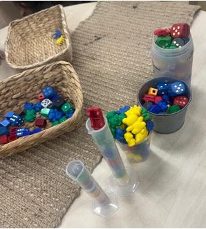
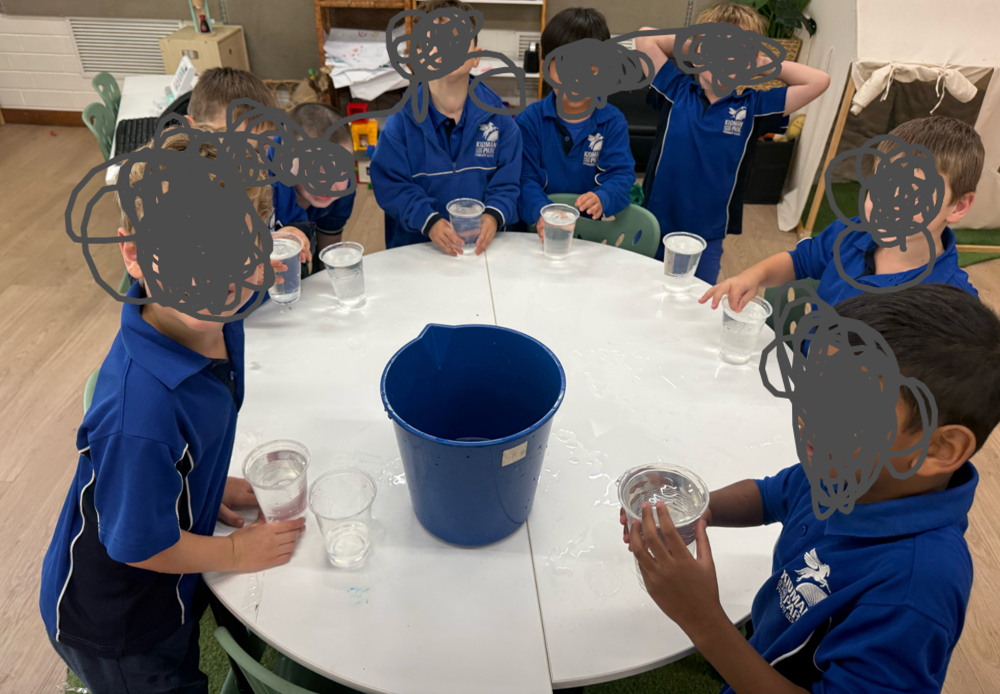
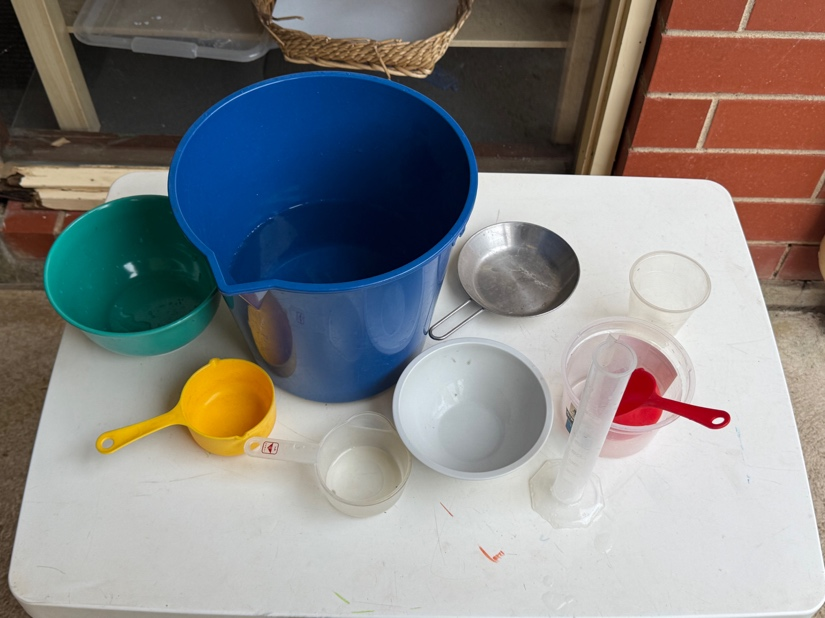
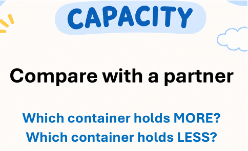

Evidence set 02
Professional Practice
Teaching Responsively and Evaluating Learning
Context for the evidence set
This evidence set draws on Reception phonics teaching, a preschool physical education unit and assessment within the measurement unit. It examines how communication, classroom organisation and assessment judgements influence children’s participation and learning. Three artefacts connect lesson reflection, practical participation support and capacity assessment with selected source evidence.
Artefact 3 — Classroom Communication and Teaching Evaluation
APST 3.5 and 3.6
Context
My recorded phonics session reviewed the grapheme <k> and phoneme /k/ (Australian Curriculum, Assessment and Reporting Authority [ACARA], n.d.). The lesson reflection and mentor-feedback account show the communication strategies used and how I evaluated teaching afterwards.
Action
Verbal explanation, blending, segmenting, repetition and questioning were combined with articulation modelling, visual prompts and letter-formation demonstrations. Individual whiteboards made children’s spelling responses visible. These strategies supported learning through hearing, seeing, saying and writing, while responses helped me check understanding. Across my phonics teaching, I also used a roller-coaster gesture to help children identify the middle sound. Video review and mentor feedback allowed me to examine instructions, pacing and interactions.
Results
My reflection records most children following the sequence and participating in articulation, decoding, spelling and dictation. The mentor-feedback account describes high engagement and effective pacing. Children also found the roller-coaster gesture helpful for locating the middle sound. These observations support participation and the strategy’s usefulness, but do not establish improved accuracy for every child.
Evaluation
The recording revealed opportunities to invite explanations before correcting spelling. Guiding a child who writes 'ket' instead of 'kit' to reconsider the middle sound remains a planned improvement. TPA5 provides an implemented evaluation cycle: the first capacity lesson using blocks was messy and confusing, so my mentor and I discussed using water. After the change, children appeared to understand better; TPA5 describes a child comparing how much water containers held and using capacity vocabulary more accurately. This links a misconception, teaching adjustment and learning response.
 Figure 3a. Initial capacity activity using blocks. |  Figure 3b. Water capacity investigation. |
Standards
APST 3.5 is addressed through verbal and non-verbal communication supporting participation. APST 3.6 is addressed through video review, mentor feedback and formative assessment informing teaching changes. Future evaluation should examine individual explanations and accuracy alongside engagement (Australian Institute for Teaching and School Leadership [AITSL], 2011).
Artefact 4 — Organising Learning and Responding to Behaviour
APST 4.2 and 4.3
Context
The phonics lesson combined modelling, guided activities, independent practice and review. My reflection examined responding to off-task behaviour while maintaining learning flow. The taught preschool Balance and Body Control unit provides a different context for organising activities and supporting participation, linked to EYLF Outcome 3 (Australian Government Department of Education, 2022).
Action
Familiar phonics routines and a structured sequence supported participation. Mentor suggestions informed proposed adjustments to directions, seating and attention signals. When a child lay down and did not participate in phonics, I called his name and encouragingly invited an answer. In PE, several children initially did not want to engage, so I began with willing participants. The PE plan specifies whole-group introductions, small-group activities, educator modelling, differentiated pathways and a safety briefing.
Results
The child re-engaged with the remaining phonics lesson and disruptive behaviour stopped. In PE, watching willing participants increased the others’ interest, and the whole class wanted to try. This demonstrates changed willingness to participate, rather than proving that everyone completed the course or mastered balance.
Evaluation
An encouraging invitation and opportunities to watch peers provided practical ways to support participation. Starting with willing children gave others time to observe before joining, consistent with the PE plan’s individual pace and choice of challenge. I will observe who joins, the support needed and sustained participation, and evaluate the proposed phonics adjustments in subsequent lessons.
Standards
APST 4.2 is supported by organised sequences, clear directions and planned grouping. APST 4.3 is supported by the encouraging phonics response and the approach to initial non-participation in PE, with observed responses in different contexts (AITSL, 2011).
Artefact 5 — Consistent Assessment Judgements
APST 5.3
Context
TPA5 describes an individual assessment of full, half full, empty, nearly full and nearly empty. The practical task, common criteria and checklist provide a basis for reviewing consistent judgements with my mentor.
Action
Responses were recorded as achieved (Y) or not yet achieved (N). TPA5 records reviewing results with my mentor against classroom expectations and the Foundation Year Achievement Standard (ACARA, n.d.). We discussed one child’s performance and agreed that he met the full, half full and empty criteria. The spreadsheet also made patterns and further teaching needs visible.
Results
Our agreement provides a specific example of reviewing achievement against shared criteria. The anonymised checklist reproduces 22 visible records: the class had 23 pupils, but one was absent. Percentages from TPA5 are omitted pending reconciliation with these records.
Evaluation
Common tasks support consistency, while moderation requires discussion about applying criteria. Agreement with my mentor helped check my judgement against another teacher’s interpretation. This differs from evaluating the blocks-to-water teaching change. In future, I will document the child’s demonstration and reasons for agreement alongside the checklist, making the process more traceable.
Standards
APST 5.3 is supported by shared criteria, the documented mentor review and agreement on the child’s achievement. Together, these show how professional discussion supported a comparable judgement (AITSL, 2011).
Selected source evidence
Read the supporting source excerpts
These excerpts support the numbered artefacts above. They are drawn from the supplied placement documents; layout has been adapted for readability. Original sources remain in originalHomework and report. Source excerpts are separate from the annotation prose.
Artefact 3 — Communication and evaluation
Source: TPA 4 JiZhou.pdf, page 5 — Video Self-Reflection
Video Self-Reflection Upon reviewing the recorded phonics session, I was pleased with the overall delivery of the lesson and the level of student engagement. Most students were able to follow the learning sequence successfully and actively participated in the articulation, blending, segmenting, decoding, spelling and dictation activities. The established phonics routine appeared familiar to students, which supported a positive learning environment and allowed the lesson to progress smoothly. One of the strengths of the lesson was my confidence and familiarity with the content. The video demonstrated that I was well prepared and comfortable delivering the phonics program. I was able to explain concepts clearly, model tasks effectively and maintain a steady pace throughout the lesson. My time management was also effective, allowing students to participate in all planned learning activities while providing opportunities for revision and practice. (APST 3.3, 4.2) I noticed that when students were less confident with irregular words or newly introduced phonemes, I naturally revisited and reinforced these concepts throughout the lesson. This repetition appeared to support student understanding and helped maintain engagement across the class. (APST 3.3) An area for further development is behaviour management, particularly when responding to the behaviour of individual students during whole-class instruction. The video prompted me to reflect on the balance between addressing the behaviour of one student and maintaining the learning flow for the rest of the class. Moving forward, I would like to further develop strategies that allow me to manage individual behaviours effectively while minimising disruption to the learning of other students. (APST 4.3) I also identified opportunities to increase student ownership of learning through more reflective questioning. For example, during whiteboard spelling activities, rather than immediately correcting errors, I could encourage students to revisit the sounds in a word and explain their thinking. If a student wrote “ket” instead of “kit”, I could guide students to identify that the grapheme <e> represents /e/ rather than /i/, allowing them to self-correct and strengthen their phoneme-grapheme knowledge. This would promote deeper thinking and encourage students to become more independent learners. (APST 3.5) All in all, the video demonstrated strong lesson organisation, clear instruction and effective phonics teaching practices, while also highlighting areas for continued growth in behaviour management and student-led reflection. (APST 3.3, 3.5, 4.2, 4.3)
Source: TPA4, page 7 — Mentor Feedback (author’s account)
Mentor Feedback My mentor provided positive feedback regarding the overall delivery of the lesson. She noted that students were highly engaged throughout the phonics session and that the lesson was well paced. She commented that I demonstrated strong content knowledge and confidence when delivering the phonics program, allowing the lesson to progress smoothly while providing appropriate opportunities for revision and consolidation of irregular words and newly introduced phonemes. (APST 3.3, 6.3) My mentor also highlighted several areas for further development. Firstly, she suggested proactively arranging student seating prior to the lesson to minimise distractions and separate students who may negatively influence one another’s learning. Secondly, she recommended incorporating more physical phonics cards and hands-on resources rather than relying primarily on PowerPoint slides, as this may further increase student engagement and participation. (APST 3.4, 4.3) In relation to behaviour management, my mentor encouraged me to explore strategies other than raising my voice when addressing off-task behaviour. She suggested using actions, movement patterns or attention signals to regain student focus, as well as lowering my voice to encourage students to listen more carefully. She also emphasised the importance of providing clear instructions before students begin any activity to ensure expectations are understood and transitions run smoothly. (APST 4.2, 4.3) Finally, my mentor acknowledged the progress I have made as an EAL teacher delivering phonics instruction. She noted that my phonics teaching was effective and well structured, while encouraging me to continue refining the pronunciation of a small number of phonemes to further strengthen my teaching practice. (APST 6.3)
 Supporting image F. Containers prepared for capacity investigation. |  Supporting image G. Capacity comparison teaching prompt. |
Supporting source: TPA5 — Focus child 2
Focus child 2 Student ProfileS showed an excellent level of interest and was prepared to do investigations in maths. However, her formative assessment showed that she acquired a misconception about the concept of capacity when she was doing the first learning activity.Assessment EvidenceI decided to use pompoms and small blocks rather than water in the first capacity lesson with my Reception class as I felt these would be more manageable. During the investigation, students were asked to compare the capacity of different containers. While observing S’s learning, I noticed that she carefully counted how many blocks fitted into a tall, narrow container and compared this with a short, wide container. Based on the number of blocks, she concluded that the tall container had a greater capacity.This assessment evidence indicated that S was using the number of objects rather than the amount a container could hold to determine capacity. Her misconception also highlighted that the learning resource itself was contributing to students’ misunderstanding, as the size, shape and arrangement of the blocks influenced the results.(APST5.4)Teaching AdjustmentsFollowing this observation, I reflected on the effectiveness of the learning activity and redesigned the next lesson. Instead of using blocks and pompoms, students investigated capacity using water. The water investigation provided a much clearer visual representation of how much each container could hold and allowed students to compare containers more accurately. Teacher modelling, questioning and whole-class discussion were also incorporated to explicitly address the misconception that taller containers always hold more.(APST3.6,5.4)Impact on LearningFollowing the water investigation, S demonstrated a much clearer understanding of capacity. She began comparing containers by considering how much water they could actually hold rather than counting the number of objects inside them. She was also able to correctly use mathematical vocabulary such as full, half full and empty when describing different containers. This experience reinforced the importance of using appropriate resources during practical investigations and demonstrated how formative assessment can inform immediate changes to teaching in order to improve student learning.
Artefact 4 — Classroom organisation and management adjustments
Source: TPA4, pages 2–3 — Adjusted lesson plan
Introduction (10 minutes)
• Review classroom expectations.
• Introduce learning intention.
• Revise articulation of /k/.
• Review previously learned graphemes and irregular words.
• Practise phonemic awareness through oral blending and segmenting activities.
Adjustment 1: Students who are easily distracted will be seated separately prior to the lesson to minimise distractions and maximise engagement during whole-class instruction. (APST 4.3)
Adjustment 4: Non-verbal attention signals and call-and-response routines will be used to regain student focus rather than raising my voice during periods of off-task behaviour. (APST 4.3)
Resources
（APST3.4）:
• Interactive Whiteboard (IWB)
• Phonics PowerPoint Presentation
• Grapheme cards
• Irregular word cards
• Individual whiteboards
• Whiteboard markers and erasers
• Decodable word lists
• Dictation sentence
• Visual articulation prompts
The lesson incorporated a range of resources including an Interactive Whiteboard (IWB), PowerPoint presentation, grapheme cards, irregular word cards, whiteboards and visual articulation prompts to support student engagement and learning. (APST 3.4)
Adjustment 2: Additional physical phonics cards will be incorporated alongside PowerPoint slides. (APST 3.4)
Experiences (20-25 minutes)
• Read and decode words containing<k>.
• Discuss vocabulary associated with target words.
• Model correct formation of the grapheme<k>.
• Complete handwriting practice.
• Practise spelling words containing /k/ using teacher modelling and guided support.
Independent Practice (10 minutes)
Adjustment 5: Clear instructions and success criteria will be explicitly reviewed before students begin independent tasks to ensure expectations are understood. (APST 4.2)
• Students complete whiteboard spelling activities.
Adjustment 3: Students will be encouraged to explain their thinking and self-correct errors through guided questioning before teacher correction is provided. (APST 3.5)
• Students write target words independently.
• Students participate in dictation activities using learned graphemes and irregular words.
Key Vocabulary
• grapheme
• phoneme
• sound
• letter
• blend
• segment
• decode
• spell
• irregular word
• handwriting
• /k/
• kite
Differentiation:
• Visual supports and articulation modelling for EAL learners.
• Repetition and review opportunities for students requiring additional support.
• Additional verbal prompts and scaffolding during spelling and dictation activities.
• Extension questioning for students demonstrating strong phonics understanding.
Conclusion (10 minutes)
• Review learning intention and success criteria.
• Revise grapheme<k>and phoneme /k/.
• Students skywrite<k>and orally produce the phoneme /k/.
Supporting source: School Final Report — Professional Practice
A safe, supportive and inclusive classroom environment was a common characteristic throughout the placement (APST 4.1, 4.2, 4.3).Clear routines, positive reinforcement, and strong relationships with students contributed to a positive learning culture where students felt confident to participate and take risks in their learning. Lessons based on Zones of Regulation supported students in recognising emotions, discussing appropriate strategies for self-regulation, and developing positive social behaviours. Calm and consistent responses to behaviour also helped maintain a respectful and productive learning environment.
Supporting source for Artefact 4: PE unit plan — Session 3
This is the final session in the three-session Balance and Body Control unit. Children will apply and combine the balance skills developed in Sessions 1 and 2 through a playful Sandpit Is Lava challenge.Using the existing sandpit environment, children will travel from a starting point to a finishing point across tyres, rocks/platforms, low climbing equipment and other stable surfaces while trying to avoid stepping on the sand.Sequence of teaching and learning: 1. Introduction and safety briefing — 5 minutesGather children near the sandpit and introduce the challenge:“The sand is lava! Can you travel from the start to the finish without your feet touching the sand?”Walk around the course with the children before beginning. Identify the start, finish and different surfaces they may use.Revisit balance strategies from previous sessions:move slowly → look where you are going → use your arms → place your feet carefully → regain your balance before moving againExplain that touching the sand is not elimination. If a child steps or falls onto the sand, they can return to the nearest safe surface and continue.2. Educator modelling — 3–5 minutesModel part of the pathway rather than demonstrating one “correct” way to complete the entire course.Think aloud while moving:“This gap is a little bigger. Where could I put my foot?”“I need to turn here. I might slow down first.”“I’m moving from the tyre to the rock. I’ll get my balance before I move again.”Invite children to identify other possible ways of moving through the course.3. Sandpit Is Lava challenge — 12–15 minutesChildren complete the course in small groups with educators positioned near areas requiring additional support.A possible pathway is:Tunnel / START↓Tyre↓Tyre↓Tyre↓Rock / low platform↓Low climbing frame↓Crate / stable plank↓FINISHChildren move at their own pace and decide how to transfer their bodies between surfaces.If a child touches the sand, they return to the closest safe point and continue. Children are encouraged to repeat the course and experiment with different movement strategies rather than competing to finish first.DifferentiationProvide different levels of challenge within the same experience.Developing balance: wider and more stable surfaces, smaller gaps, shorter pathway and educator support where required.Ready for greater challenge: narrower surfaces, slightly larger but developmentally appropriate gaps, additional direction changes or a longer pathway.Children can select an appropriate pathway rather than all children being required to complete the same level of difficulty.4. Reflection / cool-down — 3–5 minutesBring children together after the challenge.Ask children to demonstrate or describe a strategy that helped them complete the pathway.Possible questions:“What helped you keep your balance?”“Which part was challenging?”“What did you do when there was a bigger gap?”“How did you move from one surface to another?”“Did you change anything when you tried again?”Educator observations and children’s responses provide evidence of how independently they can apply the balance strategies developed across the unit.Learning intention:Children will apply and combine balance and body-control skills to move safely across a continuous pathway of different surfaces.Children will make movement choices and adjust their bodies in response to changes in surface, direction and distance.Curriculum/framework links:Outcome 3: Children have a strong sense of wellbeing.Resources:Existing sandpit equipment and environment; tyres; rocks/low stable platforms; low climbing frame; stable crates and planks; start and finish markers/signs; additional non-slip stepping surfaces if required.All equipment and pathways should be checked for stability, spacing and suitability before the session.Key questions and discussion points: “Where will you put your foot next?”“What can you do to keep your balance?”“What could you do before moving to the next surface?”“How will you move across this gap?”“What could you change if that way was difficult?”“Is there another way you could get to the finish?”
Artefact 5 — Capacity assessment and mentor review
Source: TPA5 — Summative Assessment
At the conclusion of the capacity learning sequence, students completed a summative assessment designed to evaluate their understanding of capacity vocabulary and concepts.(APST5.1) Each student was assessed individually using practical tasks that required them to identify and demonstrate the concepts of full, half full, empty, nearly full and nearly empty. Student responses were recorded using an assessment checklist, with each concept marked as achieved ("Y") or not yet achieved ("N").A common assessment checklist with clearly defined success criteria was used to assess every student individually. Using the same assessment task and criteria for all students supported consistent and comparable teacher judgements across the class. Assessment records were reviewed alongside my mentor teacher to confirm that my judgements aligned with classroom expectations and Foundation Year Achievement Standards. (APST 5.3)
Capacity checklist: anonymised transcription of the 22 rows visible in the image embedded in TPA5. C01–C22 are new row identifiers and do not identify children. Y = achieved; N = not yet achieved. Class size: 23; assessed: 22; absent: 1, as confirmed by the author. No percentages are presented.
Record | Full | Half full | Empty | Nearly full | Nearly empty |
C01 | Y | Y | Y | Y | Y |
C02 | Y | Y | Y | Y | Y |
C03 | Y | Y | N | N | Y |
C04 | Y | Y | N | N | Y |
C05 | Y | Y | N | N | Y |
C06 | Y | Y | Y | Y | Y |
C07 | Y | Y | Y | Y | Y |
C08 | Y | Y | Y | N | Y |
C09 | Y | Y | N | Y | Y |
C10 | Y | Y | Y | Y | Y |
C11 | Y | Y | Y | Y | Y |
C12 | Y | Y | Y | Y | N |
C13 | Y | Y | N | Y | Y |
C14 | Y | Y | Y | Y | Y |
C15 | Y | Y | Y | Y | Y |
C16 | Y | Y | N | N | Y |
C17 | N | N | Y | N | Y |
C18 | Y | N | Y | N | Y |
C19 | Y | Y | N | N | N |
C20 | Y | Y | Y | N | N |
C21 | Y | Y | Y | Y | Y |
C22 | Y | Y | N | N | N |
References
Australian Curriculum, Assessment and Reporting Authority. (n.d.). Australian Curriculum, Version 9.0. https://v9.australiancurriculum.edu.au/
Australian Government Department of Education. (2022). Belonging, being and becoming: The early years learning framework for Australia (V2.0).
Australian Institute for Teaching and School Leadership. (2011). Australian professional standards for teachers. https://www.aitsl.edu.au/standards
Original document
Download Evidence Set 2 (Word document)
The download includes the annotations, source excerpts, in-text citations and references.